통신선로산업기사 (2002-03-10 기출문제)
1과목: 디지털전자회로
1. 그림과 같이 1[㏀]의 저항과 실리콘(Si)다이오드의 직렬회로에서 다이오드 양단의 전압은 얼마인가?
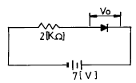
- 0[V]
- 1[V]
- 5[V]
- 7[V]
(정답률: 알수없음)

2. 에미터 접지 트랜지스터 스위칭 회로에서 베이스와 에미터를 단락시키면 출력상태는?
- 즉시 파괴된다.
- ON 상태가 된다.
- OFF 상태가 된다.
- ON 상태도 OFF 상태도 아니다.
(정답률: 알수없음)
3. TTL(Transistor-Transistor Logic)의 특징을 설명한 것으로 틀린 것은?
- Fan - out를 많이 할수 있다.
- 논리회로중 응답속도가 가장 늦다.
- 출력 임피이던스가 낮다.
- 잡음 여유도가 낮다.
(정답률: 알수없음)
4. 그림과 같은 연산 증폭기의 증폭도는? (단, Ri =∞, AV =∞)
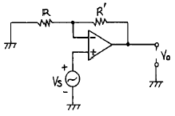
- -R/R'
- -R'/R
- (R + R')/R
- R/(R + R')
(정답률: 알수없음)
5. S-R Flip-Flop 을 J-K Flip-Flop으로 바꾸려고 할 때 필요한 게이트는?
- 2개의 AND 게이트
- 2개의 OR 게이트
- 2개의 NAND 게이트
- 2개의 Ex-OR 게이트
(정답률: 알수없음)
6. CR 발진기의 설명으로 옳은 것은?
- 부성저항 특성을 이용한 발진기이다.
- C 및 R로써 정궤환에 의한 발진기이다.
- 압전효과에 의한 발진기이다.
- 부궤환에 의한 비정현파 발진기이다.
(정답률: 알수없음)
7. JK F/F(flip-flop)의 2개의 입력이 똑같이 1이고, 클럭펄스가 계속 들어오면 출력은 어떤상태가 되는가?
- Set
- Reset
- Toggle
- 동작불능
(정답률: 알수없음)
8. 어느 반송파를 정현파 신호에 의하여 100[%] 진폭변조하였을 때 피변조파 출력전력 Pm과 반송파 전력 PC와의 관계는?
- Pm = PC
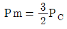
- Pm = 2PC
- Pm = 3PC
(정답률: 알수없음)
9. 다음 회로에서 Vi - Vo특성곡선을 올바르게 나타낸 것은?
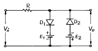
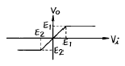
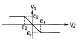
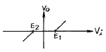
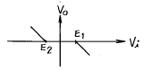
(정답률: 알수없음)
10. 다음 논리식은 무슨 법칙을 활용하여 전개한 것인가?
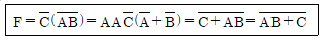
- 보수와 병렬의 법칙
- 드몰간(De Morgan)의 법칙
- 교차와 병렬의 법칙
- 적(積)과 화(和)의 분배의 법칙
(정답률: 알수없음)
11. 바크하우젠의 발진조건에서 증폭기의 증폭도 A=100 이고, 귀환회로의 귀환비율을 β 라고 할 때 귀환비율 β 값은?
- 10
- 1
- 0.1
- 0.01
(정답률: 알수없음)
12. SSB(Single Side Band)에 관한 설명 중 맞는 것은?
- LSB와 USB로 구성된다.
- 전력 손실이 높다.
- 점유주파수 대폭이 반으로 줄어들고, 전력소모도 훨씬 적어진다.
- DSB에 비하여 진폭이 2배로 늘어난다.
(정답률: 알수없음)
13. 입출력장치를 마이크로컴퓨터에 연결하는 데에 필요한 특수한 장치는?
- 인터페이스(interface)회로
- 레지스터(register)회로
- 누산기(accumulator)회로
- 계수기(counter)회로
(정답률: 알수없음)
14. 다음 3변수 논리식을 간단히 하면?
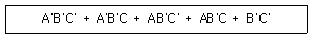
- A
- B
- B'
- C
(정답률: 알수없음)
15. 동조형 증폭기에서 공진주파수 fo, 주파수 대역폭 B, 코일의 Q 와의 관계를 설명한 것중 맞는 것은?
- B와 fo는 비례한다.
- Q와 fo는 반비례한다.
- Q와 fo의 자승에 비례한다.
- Q 는 B의 자승에 비례한다.
(정답률: 알수없음)
16. 그림의 궤환 증폭기에서 C를 제거하면 어떤 현상이 일어나는가?
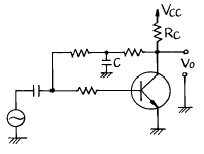
- 이득이 감소한다.
- 이득이 증가한다.
- 발진이 일어난다.
- 안정도가 향상된다.
(정답률: 알수없음)
17. 배타 OR(Exclusive OR)회로의 논리식으로 잘못된 것은?
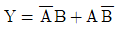
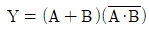
- Y = A⊕B
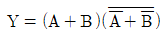
(정답률: 알수없음)
18. 그림과 같은 회로에 입력 Vi가 인가되었을 때 출력은 어느 것이 가장 적당한가?
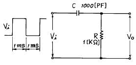
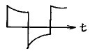
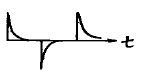
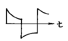
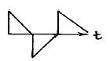
(정답률: 알수없음)
19. 트랜지스터의 증폭기의 입력전력이 4[㎽]이고, 출력전력이 8[W]일 때 이 증폭기의 전력이득은?
- 20[㏈]
- 33[㏈]
- 65[㏈]
- 85[㏈]
(정답률: 알수없음)
20. 그림과 같은 회로의 입력에 계단전압(step voltage)을 인 가할 때 출력에는 어떤 파형의 전압이 나타나는가? (단, A는 이상적인 연산증폭기이다.)
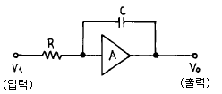
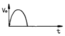
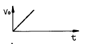
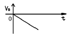
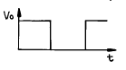
(정답률: 알수없음)
2과목: 유선통신기기
21. 다음은 비대칭 디지털 가입자 회선(ADSL)의 특징을 설명하였다. 이중 타당한 것은?
- ADSL은 양 방향 공히 전송되는 데이터량이 같다.
- ADSL은 상향 전송 속도 보다는 하향 전송 속도가 빠르므로 인터넷 환경에 적합하다.
- ADSL은 한 방향으로만 데이터를 전송 할 수 있으로 제어 신호와 같은 데이터 전송이 가능하다.
- ADSL은 현재 전화선으로는 고속 데이터 통신이 불가능 하므로 별도의 전용선을 시설해야 한다.
(정답률: 알수없음)
22. 음성 및 여러 종류의 데이터를 합성할 수 있고 간이전산 기능을 갖는 단말기를 무엇이라 하는가?
- 전자화 단말기(electronic terminal)
- 광대역 단말기(wide band terminal)
- 인텔리젠트 단말기(intelligent terminal)
- 종합화 단말기(integrated terminal)
(정답률: 알수없음)
23. 탄소 송화기에서 탄소입자의 발열로 팽창 등에 의해 저항이나 감도가 주기적으로 변화되는 현상은?
- 응고 현상
- 열화 현상
- 호흡 현상
- 정전 현상
(정답률: 알수없음)
24. 전화의 음성신호 세력은 어느 정도의 레벨이 가장 통화에 적당한가?
- +10[dB]이상
- -20[dB]이하
- 0[dB]정도
- -10[dB]에서 -20[dB]정도
(정답률: 알수없음)
25. 다음 중 아날로그 전송보다 디지털 전송이 많이 이용되게 되는 이유와 거리가 먼 것은?
- 데이터통신이 적합하다.
- 보수성이 좋다.
- 전송도중 들어오는 잡음에 강하다.
- 중간에 증폭없이 먼거리(수백 Km) 까지 전송이 가능하다.
(정답률: 알수없음)
26. 코드분할 다중접속(CDMA) 이동통신의 기술에서 이동국이 통화중인 기지국의 서비스지역을 벗어나도 통화중인 호가 끊어지지 않고 계속 유지되도록 채널전환이 이루어 지는 기능은?
- 트래픽 제어 기능
- 핸드오프(Hand-off)
- 전력제어
- 로밍
(정답률: 알수없음)
27. 모뎀의 루프백 시험(Loopback Test) 중에서 자국 모뎀의 송신측과 수신측을 그림과 같이 접속하여 시험하는 방법의 명칭은?
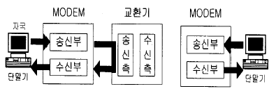
- 자국 디지털 루프백 시험
- 원격 아날로그 루프백 시험
- 회선 루프백 시험
- 원격디지털 루프백 패턴 시험
(정답률: 알수없음)
28. Data 통신 계통의 구성에서 정보처리를 가장 신속히 처리하는 방식은?
- off line 시스템
- batch process 처리방식
- delayed time 시스템
- real time 시스템
(정답률: 알수없음)
29. 다음 중 CATV의 제공 서비스가 아닌 것은?
- VAN 및 LAN등의 부가통신 서비스
- TV 및 FM방송
- 홈 쇼핑등의 부가통신 서비스
- 원격검침 서비스
(정답률: 알수없음)
30. PCM 방식으로 아나로그를 디지탈로 변화시킬때 북미방식에서 사용하는 표본화 주파수는?
- 2KHZ
- 4KHZ
- 8KHZ
- 12KHZ
(정답률: 알수없음)
31. L3 시험기로 비례변 다이얼을 1000에 놓고 가변저항값이 250[Ω]일 때 검류계가 “0” 이 되었다. 고장지점까지의 거리는 몇[m]인가? (단, 케이블 전체길이가 1800[m]이다.)
- 250
- 450
- 600
- 720
(정답률: 알수없음)
32. 최번시 호수가 1,335이고 최번시집중률이 12[%]인 때의 1일중 총호수는 얼마인가?
- 985
- 11,125
- 12,650
- 22,150
(정답률: 알수없음)
33. 동일호량과 동일 서비스 등급에서 가장 적은 회선을 산출하는 공식은?
- Martin의 공식
- Erlang의 공식
- Molina의 공식
- O'dell의 공식
(정답률: 알수없음)
34. 반송 단국장치에서 전화기 및 교환기측의 2W와 장치측 4W를 정합하기 위한 회로 소자는?
- RET Coil
- HYBRID Coil
- REPEATING Coil
- RING MODULATOR
(정답률: 알수없음)
35. 10회선의 중계선이 약 30[%] 사용중인 상태에 있어서 이 중계선이 운반하는 호량은?
- 3 [Erl]
- 5 [Erl]
- 7 [Erl]
- 9 [Erl]
(정답률: 알수없음)
36. 자동 전화 교환기의 동작 전류 종류를 맞게 설명한 것은?
- 유지 전류 : 접점이 완전히 접촉되는 최소 전류
- 복구 전류 : 접점이 평상상태로 돌아 가는 최대 전류
- 감동 전류 : 접점의 동작상태를 지킬 수 있는 최소 전류
- 불감동 전류 : 접점이 완전히 접촉되기 전의 최소 전류
(정답률: 알수없음)
37. No.4 ESS 교환기에 대한 설명중 맞는 것은?
- 공간분할방식이다.
- 관련 라인파인더가 전부 사용중인 때에는 발신자에게 화중음을 송출한다.
- 프로세서는 1A 프로세서를 사용한다.
- 호처리용량이 200[KBHCA]이다.
(정답률: 알수없음)
38. 전화 교환기에서 발신 전화기로 보내는 가청음 신호가 아닌 것은?
- 발신음
- 호출음
- 폭주 신호
- 숫자 정보 신호
(정답률: 알수없음)
39. 국산 전전자교환기 TDX-10의 주요 특징으로 맞지 않는 것은?
- 중앙집중제어구조
- 병렬처리 운영체제
- CHILL/SDL 프로그래밍 언어 사용
- 분산제어구조
(정답률: 알수없음)
40. MFC푸쉬버튼(push button)다이얼 전화기는 저군주파수와 고군주파수와의 음성주파수대 2개 주파수를 조합하여 선택신호를 구성한다. 다음 중 "1"에 해당 되는 것은?
- 697[㎐], 1209[㎐]
- 770[㎐], 1309[㎐]
- 852[㎐], 1336[㎐]
- 941[㎐], 1477[㎐]
(정답률: 알수없음)
3과목: 전송선로개론
41. 통신용 케이블의 심선 집합 구성으로 옳은 것은?
- 쌍 → 그룹 → 유니트
- 쌍 → 유니트 → 그룹
- 그룹 → 쌍 → 유니트
- 유니트→ 그룹 → 쌍
(정답률: 알수없음)
42. 파장분산 측정법중 방식이 다른 것은?
- 주파수소인법
- 위상비교법
- 차분법
- 광파장소인법
(정답률: 알수없음)
43. PCM 재생중계기의 3대 기본기능이 아닌 것은?
- 등화증폭
- 리미터작용
- 타이밍 재생
- 식별 재생
(정답률: 알수없음)
44. 가입자보호기 설치장소로 고려하여야할 사항과 거리가 먼 것은?
- 옥외 전화선이 건물의 인입구와 가까운 장소로 한다.
- 전력선과 1[m]이상 이격할 수 있어야 한다.
- 사람 손이 닿을 수 있는 곳을 선정한다.
- 진동,습기 및 연기의 영향을 적게 받는 장소로 선정한다.
(정답률: 알수없음)
45. 종단 개방 공진 선로에서 개방단으로부터 d=λ/4의 짝수배일 때 임피던스 Zd는?
- Zd = ∞
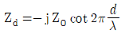
- Zd = 0
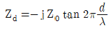
(정답률: 알수없음)
46. 그림은 케이블 선로의 임피던스 부정합을 나타낸 것이다. 이 경우에 반사파의 파형으로 옳은 것은?
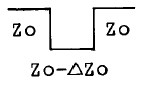
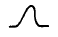
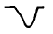
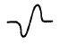
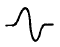
(정답률: 알수없음)
47. 그림과 같은 접속선로에서 선로 Ⅱ의 종단이 개방되었을 때 다음중 옳지 않은 것은?
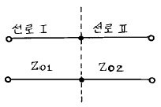
- 전압반사계수 = 1
- 전류반사계수 = -1
- 전압투과계수 = 2
- 전류투과계수 = 2
(정답률: 알수없음)
48. 시내 전화케이블을 지하관로내에 포설할 경우 1분간 포설 속도로서 다음 중 가장 적합한 것은? (단, 포설구간은 직선구간이다.)
- 10 - 20[m]
- 100 - 150[m]
- 50 - 100[m]
- 150 - 200[m]
(정답률: 알수없음)
49. 기설된 공중 통신용 케이블 전송망을 운용관리하는 요령에 대한 설명으로 틀린 것은?
- 주기적으로 설비를 순회점검한다.
- 정기적으로 전기적 특성을 측정시험한다.
- 유지보수의 작업일지를 기록 보존한다.
- 일반인들에게 관람시켜서 통신시스템을 선전한다.
(정답률: 알수없음)
50. PCM전송기술에 있어 아날로그정보를 디지털정보인 펄스부호로 변화하는 과정으로 적당한 것은?
- 음성 → 표본화 → 부호화 → 양자화
- 음성 → 표본화 → 양자화 → 부호화
- 음성 → 양자화 → 표본화 → 부호화
- 음성 → 부호화 → 표본화 → 양자화
(정답률: 알수없음)
51. 모든 심선을 착색하여 오접속할 우려가 적고 선번대조가 불필요하여 시내선로에 많이 사용되는 케이블은?
- 폼스킨 케이블
- 월만텔 케이블
- 스탈페스 케이블
- 광섬유 케이블
(정답률: 알수없음)
52. 다음 다중모드(MM) 광케이블 표기방법이 틀린 것은?
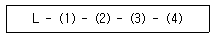
- (1) : 광섬유 CORE수
- (2) : 손실등급(A, B)
- (3) : 대역폭 등급(A, B, C)
- (4) : 광원파장(장파장 1,300nm)
(정답률: 알수없음)
53. 광섬유를 영구 접속(Splicing)할 때 융착 접속방법을 사용한다. 융착접속시 작업순서로 맞는 것은?
- 광섬유정렬 - 본방전 - 예비방전 - 접속점의 보강
- 광섬유정렬 - 접속점의 보강 - 예비방전 - 본방전
- 광섬유정렬 - 예비방전 - 본방전 - 접속점의 보강
- 예비방전 - 접속점의 보강 - 본방전 - 광섬유정렬
(정답률: 알수없음)
54. 일반적으로 전송로 상에서의 근단누화와 원단누화의 크기는?
- 근단누화가 크다.
- 원단누화가 크다.
- 서로 같다.
- 경우에 따라 틀린다.
(정답률: 알수없음)
55. 광섬유 케이블과 동(銅)심선 케이블과의 비교 설명으로 적합하지 않은 것은?
- 동선의 경우 전류값은 선로정수에 의하고 광섬유의 경우 광파는 도파정수에 따라 결정된다.
- 동선의 전류는 전압이 낮은 곳에서 높은 곳으로, 광섬유의 경우 광파는 도파시간이 최소에서 최대가 되는 통로로 전파된다.
- 동선은 쌍형(pair), DM퀴드, 성형퀴드 등으로 구분되고, 광섬유의 경우 계단형 멀티모드, 언덕형 멀티모드, 계단형 싱글모드 등으로 구분한다.
- 동선은 1차 정수외에 표피작용, 근접작용, 와류손실 등의 영향을 받고, 광섬유는 도파정수 외에 래일리 산란, 이온흡수, 구조불완전 등의 영향을 받는다.
(정답률: 알수없음)
56. 고흥(전라남도)과 성산포(제주도)사이에 포설된 해저광케이블의 설명으로서 틀린 것은?
- 케이블은 바다밑 땅속에 파묻었다.
- 케이블 내에는 프레온가스를 가득 채워 넣었다.
- 해저중계기의 설치간격은 약 60[㎞] 정도이다.
- 사용파장이 1.31[㎛]가 있다.
(정답률: 알수없음)
57. LAN의 전송매체로 이용되지 않는 것은?
- 동축 케이블
- UTP 케이블
- 지절연 케이블
- 광케이블
(정답률: 알수없음)
58. 그림에서와 같이 굴절률이 주어진 광섬유케이블의 입사각 θ는 얼마가 적당한가?
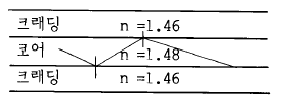
- 95.5°
- 87.7°
- 80.6°
- 74.4°
(정답률: 알수없음)
59. 선로시설(가공 및 지하케이블)에 전력선 등으로부터 전력유도가 발생되어 이에 대한 대책을 강구하여야 한다, 가장 불합리한 방법은?
- 전력유도 예측계산을 하여 유도구간의 중간지점에 유도 중화코일을 설치한다.
- 전력유도 케이블에 대하여 국내에 유도저감장치(A.R.S) 를 설치한다.
- 가공케이블의 경우에는 지하화 하거나 적정수치의 차폐케이블을 설치한다.
- 통신선로를 철거하거나 기 설치된 루트를 바꾼다.
(정답률: 알수없음)
60. 북미에서 주로 사용되는 전송부호 방식이 아닌 것은?
- B8ZS(bi-polar with 8 zero substitution)
- AMI(alternate mark inversion)
- HDB3(high density bi-polar 3)
- B6ZS(bi-polar with 6 zero substitution)
(정답률: 알수없음)
4과목: 전자계산기일반 및 선로설비기준
61. 자료의 외부적 표현방식인 EBCDIC 코드로 표현할 수 있는 최대 문자수는?
- 36자
- 120자
- 256자
- 282자
(정답률: 알수없음)
62. 전송설비 및 선로설비는 전력유도 전압이 제한치를 초과 할 우려가 있는 경우 전력유도 방지조치를 하여야 한다. 다음 중 이상시 유도위험종전압의 제한치는?
- 60[V]
- 220[V]
- 460[V]
- 650[V]
(정답률: 알수없음)
63. 다음중 공사업 등록의 결격사유에 해당하지 않는 것은?
- 금치산자
- 공사업법의 규정에 위반하여 벌금형을 선고받은지 1년이 경과한 자
- 공사업법의 규정에 위반하여 등록이 취소된지 3년이 경과한 자
- 파산선고를 받고 아직 복권되지 않은 자
(정답률: 알수없음)
64. 자가전기통신 설비의 설치에 관한 신고 또는 변경신고를 한자는 그 설치공사 또는 변경공사를 완료한 때에 확인을 받지않고 사용한 자에 대한 위반조치 사항은?
- 1년이내의 사용정지
- 2년이내의 사용정지
- 3년이내의 사용정지
- 4년이내의 사용정지
(정답률: 알수없음)
65. 전기통신의 전송이 이루어지는 계통적 통신망은 무엇이라고 하는가?
- 선로
- 회선
- 통신설비
- 단말장치
(정답률: 알수없음)
66. 순서도의 작성 시기는?
- 입.출력 설계 후
- 타당성 조사 후
- 프로그램 코딩 후
- 자료 입력 후
(정답률: 알수없음)
67. 다음 중 정보의 개념을 하위 개념에서 부터 상위 개념으로 나열한 것은?
- 필드(Field) → 레코드(Record) → 파일(File) → 문자(Character)
- 레코드(Record) → 파일(File) → 필드(Field) → 문자(Character)
- 문자(Character) → 필드(Field) → 레코드(Record) → 파일(File)
- 파일(File) → 문자(Character) → 필드(Field) → 레코드(Record)
(정답률: 알수없음)
68. 정보통신공사업법령의 규정에 의한 공사의 구분에 해당하지 않는 것은?
- 통신설비공사
- 전기설비공사
- 정보설비공사
- 방송설비공사
(정답률: 알수없음)
69. 터널식 또는 개착식 등의 통신구 공사의 하자 담보 책임 기간은?
- 10년
- 5년
- 3년
- 1년
(정답률: 알수없음)
70. 다음에서 접근 속도(access time)가 빠른 순서로 나열된 것은?
- 자기코어 - 자기디스크 - 자기드럼
- 자기버블 - 캐시 - 자기디스크
- 자기코어 - 캐시 - 자기디스크
- 캐시 - 자기코어 - 자기드럼
(정답률: 알수없음)
71. 프로그램 카운터가 명령 번지 부분과 더해져서 유효 번지가 결정되는 주소지정 방식은?
- 상대 번지 모드
- 간접 번지 모드
- 인덱스 번지 모드
- 베이스 레지스터 번지 모드
(정답률: 알수없음)
72. (01001101)2의 1의 보수는?
- (10110010)2
- (01001110)2
- (11001101)2
- (10110011)2
(정답률: 알수없음)
73. 전기공작물 또는 전철시설 등이 그 주위에 있는 전기통신설비에 대하여 정전유도 및 전자유도 등에 의한 전압이 발생되게 하는 현상을 무엇이라 하는가?
- 전화유도
- 전파유도
- 지하유도
- 전력유도
(정답률: 알수없음)
74. 다음 전기통신관련법규의 벌칙중 최고형인 것은?
- 전기통신 기자재의 형식승인을 얻지 아니하고 이를 제조·판매 하는자
- 공익을 해할 목적으로 전기통신설비에 의하여 공연히 허위의 통신을 한자
- 비상시의 통신의 확보시 취급 및 접속 명령에 위반한자
- 전기통신설비의 조사.시험을 거부 또는 기피하거나 이에 지장을 주는 행위를 한자
(정답률: 알수없음)
75. 다음중 인터럽트(interrupt)가 발생되지 않는 경우는 어느 것인가?
- 오퍼레이터의 필요시 콘솔인터럽트 key 조작에 의해 자료를 입력하여, 현재 수행되는 프로세서를 제어할 때
- 연산결과 오버플로(overflow)가 발생했을 경우 또는 0으로 나누었을 경우
- 입출력장치의 착오에 의하여 오류가 발생하는 경우
- 인덱스 주소방식에 의해 메모리의 자료를 다른 영역의 메모리에 이동시킬 때
(정답률: 알수없음)
76. 전기통신사업자의 공정한 경쟁환경의 조성 및 전기통신역 무 이용자의 권익보호에 관한 사항의 심의는 어디에서 하는가?
- 통신위원회
- 한국정보통신기술협회
- 한국정보통신공사협회
- 한국정보통신윤리위원회
(정답률: 알수없음)
77. 다음중 도형이나 사진 등을 기억장치로 읽어들일 수 있는 장치는?
- keyboard
- scanner
- mouse
- OCR
(정답률: 알수없음)
78. 다음 중 전자계산기 중앙처리장치의 구성요소가 아닌 것은?
- 주기억장치
- 제어장치
- 연산장치
- 전원장치
(정답률: 알수없음)
79. 오퍼레이팅 시스템의 성능 평가중 데이터 처리를 위하여 시스템이 필요하게 되었을 때 시스템을 어느 정도 빨리 사용할 수 있는가를 나타내는 것은?
- 처리능력
- 응답시간
- 사용가능도
- 신뢰도
(정답률: 알수없음)
80. 기간통신사업을 경영하고자 하는 자는 누구의 허가를 받아야 하는가?
- 국무총리
- 정보통신부장관
- 한국통신사장
- 통신위원회 위원장
(정답률: 알수없음)
다이오드의 정방향 전압은 보통 데이터시트에서 확인할 수 있습니다. 이 문제에서는 다이오드의 종류가 주어지지 않았으므로, 일반적으로 사용되는 실리콘 다이오드의 정방향 전압인 약 0.7[V]을 사용합니다.
따라서, 1[㏀]의 저항과 실리콘 다이오드의 직렬회로에서 다이오드 양단의 전압은 0.7[V] + 6.3[V] = 7[V]가 됩니다. 따라서 정답은 "7[V]"입니다.